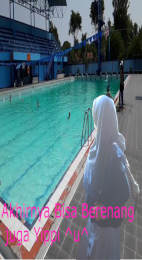
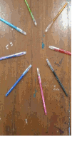

Is My Life Maelani Samudra
Perkenalkan namaku Maelani, teman teman sering memanggil ku Mae. Ada salah satu temen ku yang memanggil ku Maemunah/Maesarooh.
Aku lahir di Bogor pada tanggal 25 Mei 2002.
Aku memiliki 2 adik dan 1 kakak. Tempat tinggal ku di Komplek Bogor raya permai Blok FM 6 No. 1. Jarak antara sekolah dan rumah ku kira kira 20 km.
Hobbi..., pasti semua orang memilikinya, aku pun begitu. Dulu aku bingung harus memilih hobby apa..., tetapi sekarang, tapi sekarang tidak lagi. Mau tau hobbi ku? Nih ya aku kasih tau, liat gambarnya ya ^-^

Nah udah tau kan hobby ku itu apa..., tapi aku bingung deh kenapa ya aku suka berenang. Padahal kan aku jarang pergi berenang. Apakah itu bisa dikatakan hobby ya? Bisa kali ya ^_^
Aku mau tanya, apakah kalian meemiliki IDOLA?
Kebanyakan orang memilikinya, dan sekarang ini banyak yang mengidolakan aktris dan aktor Korea Selatan. Kenapa begitu, karena aku pun mengidolakannya.
Coba kalian tebak siapa idola ku...:D. Idola ku ini seorang lelaki yang tampan loh. Kita liat gambarnyaaja yuk....:D

Gimana? tampan bukan...,nama aktor Korea tersebut itu Cha Eun Woo. Aku mempunyai gambarnya lagi, liat ya di bawah ini. Aku mengenal aktor ini dari sebuah Drama Korea yang berjudul MY ID GANGNAM BEAUTY. Kalian juga jangan lupa nonton ya, seru loh..^_^
Kalian sering menggunakan gif di sosmed kan. kali ini aku akan menampilkan hasil karya gif yang dibuat sendiri. Semoga kalian menyukainya^_^.

Walaupun simple, tetapi sangat bermakna di kehidupanku.
Sudah dulu ya teman, sampai jumpa dilain waktu. Bye...Bye...Bye..
lanjut yuk kehidupan Pendidikan di SMK - SMAK BOGOR